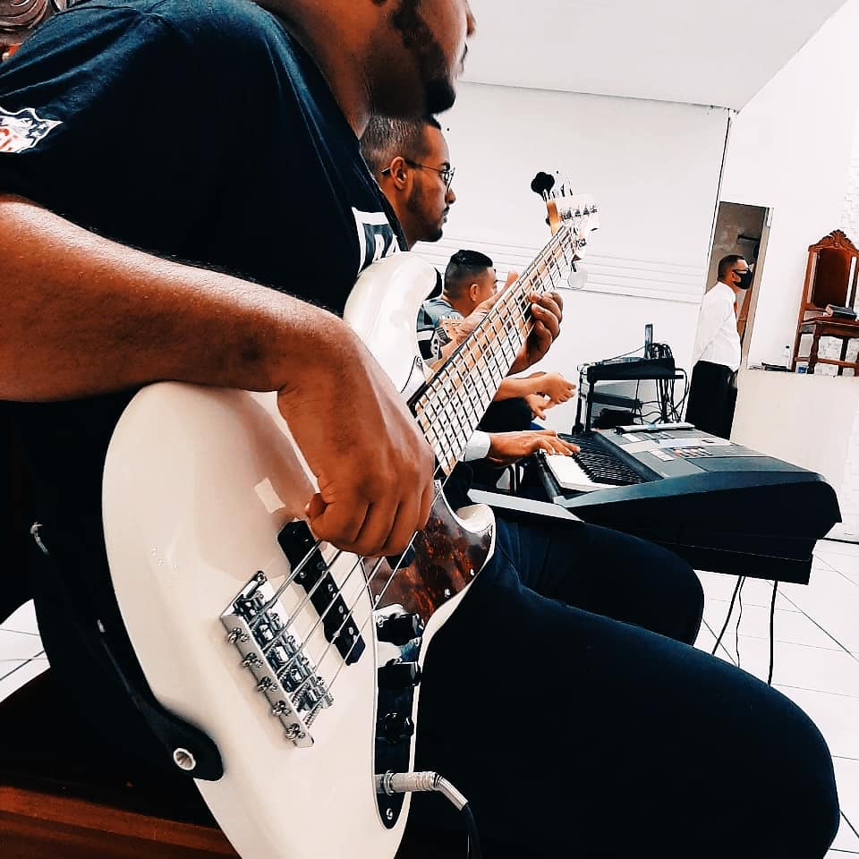
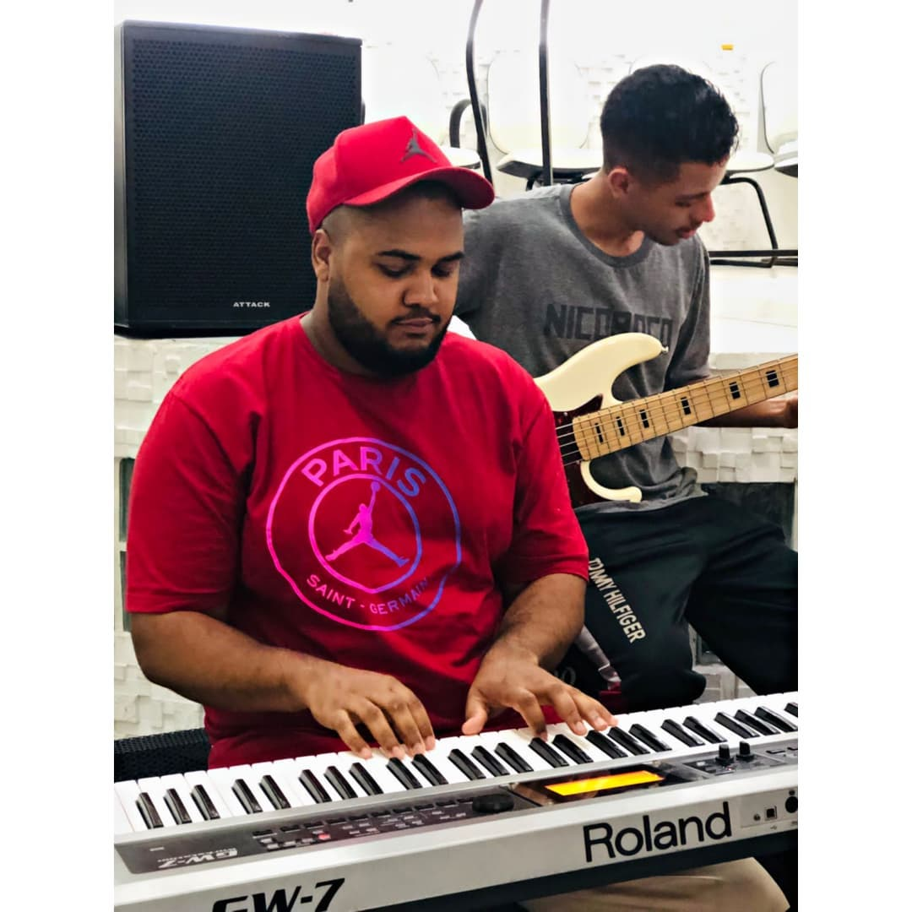

Sou apaixonado por tecnologia, com um forte senso de trabalho em equipe, posso contribuir com soft Skills como Proatividade, Persistência, Responsabilidade pessoal, estando sempre em constante evolução busco aprender novas tecnologias para me tornar um profissional fora da curva, participando do bootcamp da Generation procuro evoluir como Desenvolvedor web FullStack com foco em Java, HTML, CSS, Javascript, MySQL, Spring boot, React e poder contribui ainda mais, dito isso estar em um ambiente que valorize o desenvolvimento pessoal/profissional e de suma importância para mim, desde já obrigado por chegar até aqui.
Uma da coisa que faço para me divertir e estudar Musica, a musica para mim, e de grande importancia, ja que ela me alxiliou na superação de uma fze dificil da minha vida, atualmente eu estudo contra baixo e teclado, mas no futuo pretendo aprender outros instrumentos, nos momento em que, nao estou estudando musica, gosto muito de desenhar,ver um seria e jogar video game, ou so ficar procrastinando no youtube.  
Quando estava iniciando minha trajetória na área de música, recebi a oportunidade de participar de uma banca, que iria apresentar uma cantata de natal com um repertorio de 10 músicas. Ao receber a proposta não havia notado dificuldade que o repertório exigia, que no caso estava além do meu do meu nível. Foi me dito que teria o prazo de 40 dias para aprender as musicas de forma excelente. Como já havia me comprometido a apresentar, resolvi tentar mesmo com as dificuldades e encarar como uma oportunidade de evoluir minhas habilidades. Os dias recorrentes foram de muito trabalho duro e esforço, com longas horas de estudo e prática. Ao chegar no ensaio pude tocar todo o repertório sem muito esforço. Fui muito elogiado pelo maestro, já que ele sabia em que ponto estava quando recebi a proposta. Depois de muito trabalho duro, pude colher os frutos sendo convidado para muitos outros trabalhos.